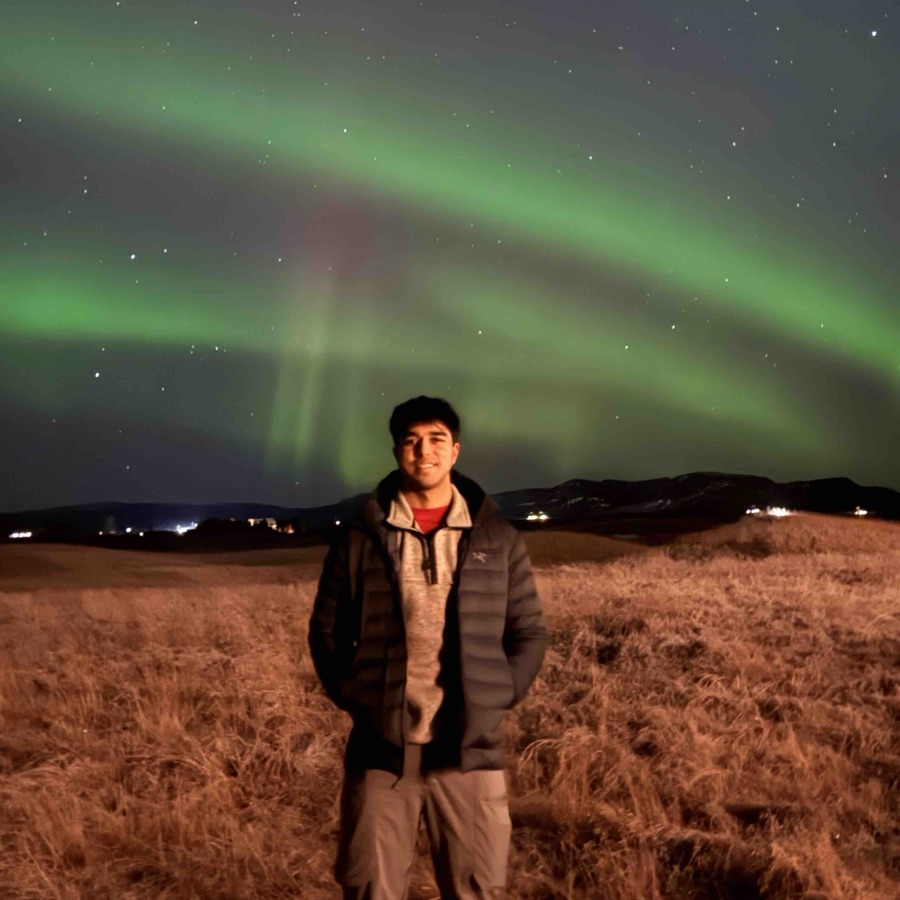
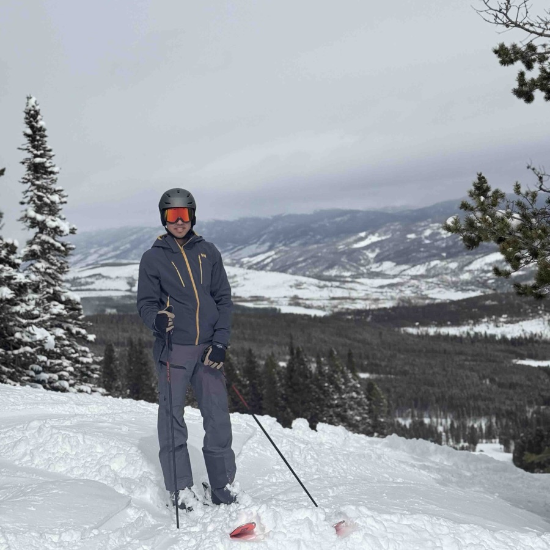

Nayan Patel
I'm Nayan, a student at Penn studying AI and Statistics. I like interpreting LLMs and making them run faster. Next summer, I'll be researching AI agent security at NVIDIA.
I'm Nayan, a student at Penn studying AI and Statistics. I like interpreting LLMs and making them run faster. Next summer, I'll be researching AI agent security at NVIDIA.


I'm currently:
I've worked on:
I also surf, play golf, and watch football (go Panthers!)